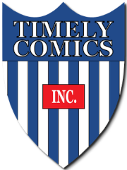

Criada em 1939 em Nova York originalmente com o nome de Timely Comics.
Continuou com esse nome até 1950 quando passou a se chamar Atlas Comics, que logo viria a se tornar Marvel Comics.
Um dos maiores quadrinistas da editora foi Stan Lee.
Criador de heróis icônicos como Homem-Aranha, Demolidor, Quarteto Fantástico, X-Men, Vingadores e muitos outros.
1922-2018
Enquanto esteve vivo Stan fez participações especiais em todos os filmes do MCU e alguns fora dele como: